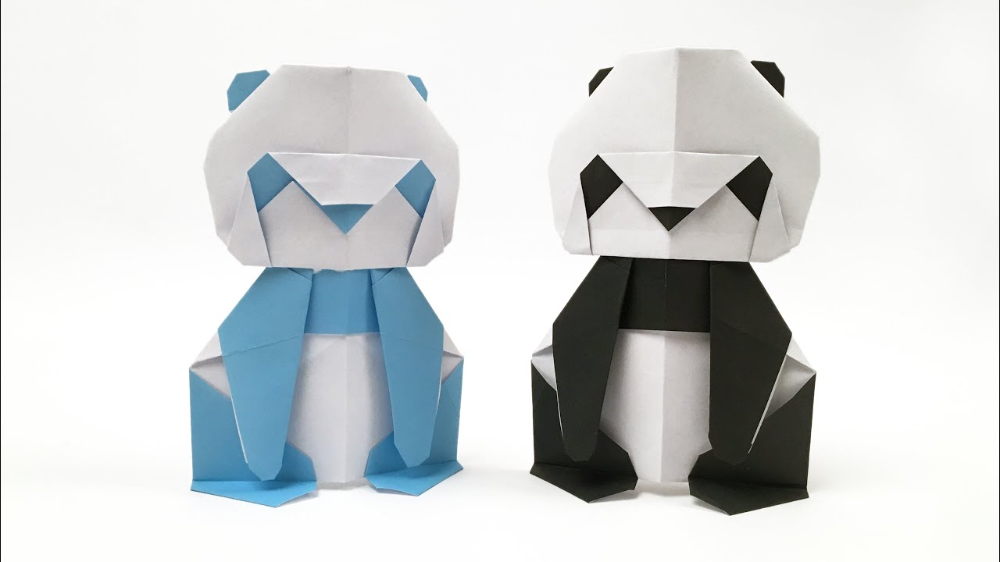

Interesting Facts about Chameleon
- Chameleons are reptiles that are part of the iguana suborder
- Changing skin color is an important part of communication among Chameleons
- Most Chameleons have a prehensile tail that they use to wrap around tree branches

Interesting Facts about Pigeon
- Pigeons are incredibly complex and intelligent animals
- Pigeons are renowned for their outstanding navigational abilities
- Pigeons have excellent hearing abilities

Interesting Facts about Camel
- There are two types of camel: One humped or 'dromedary' camels and two humped Bacterian camels
- Camels have three sets of eyelids and two rows of eyelashes to keep sand out of their eyes
- Camels can completely shut their nostrils during sandstorms
- Their humps let them store up to 80 pounds of fat which they can live off for weeks and even months!
- When a camel finally does find water, he can drink up to 40 gallons in one go

Interesting Facts about Panda
- The giant panda's distinct black-and-white markings have two functions: camouflage and communication
- Like domestic cats, giant pandas have vertical slits for pupils
- Giant pandas spend 10-16 hours a day feeding, mainly on bamboo
- They have an extended wrist bone that they use like a thumb to help them grip food
- Pandas need at least 2 different bamboo species in their range to avoid starvation

Interesting Facts about Cicada
- The body of a cicada is similar to that of a violin or a guitar, in that much of it consists of empty, air-filled spaces that act like a resonating chamber and amplify the sound they generate
- Scientists divide the over 3,000 cicada species into two groups: annual and periodical
- Annual cicadas emerge from the ground at different times each summer. These insects avoid predators by camouflaging themselves in the trees and flying from hungry birds and moles
- They have black backs, orange bellies, and red eyes. Millions—or even billions!—of cicadas might come out all at once, so these bugs aren’t trying to hide
- An annual cicada — the kind you see every year — can live two to five years
- the periodical cicadas can live up to 17 years in the larva stage
- Cicadas live on all continents except Antarctica
- They have an extended wrist bone that they use like a thumb to help them grip food
- Pandas need at least 2 different bamboo species in their range to avoid starvation